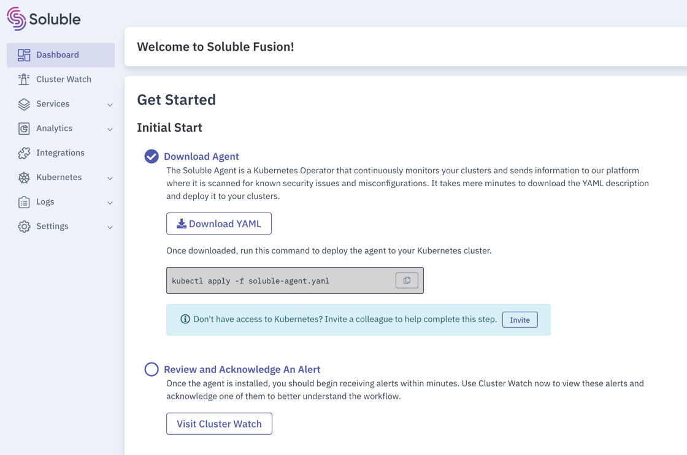

Getting Started
Overview
Soluble Fusion is a SaaS platform for operationalizing security-related services for modern software development.
It consists of two primary components:
- Soluble Fusion API Services and Web Application - This is hosted by Soluble. The endpoint is https://app.soluble.cloud
- Soluble Agent - This is a kubernetes operator that runs in your kubernetes clusters.
Getting Started
Step 1: Enroll in 30 seconds
-
Open a browser to https://app.soluble.cloud
-
Click Create Account
-
Select Google or GitHub (let us know if you'd like to see other identity providers)
-
Select your account
- Agree to Terms of Service
- Done!
Step 2: Follow Guided Setup
The rest of the setup instructions are provided in the app itself:
